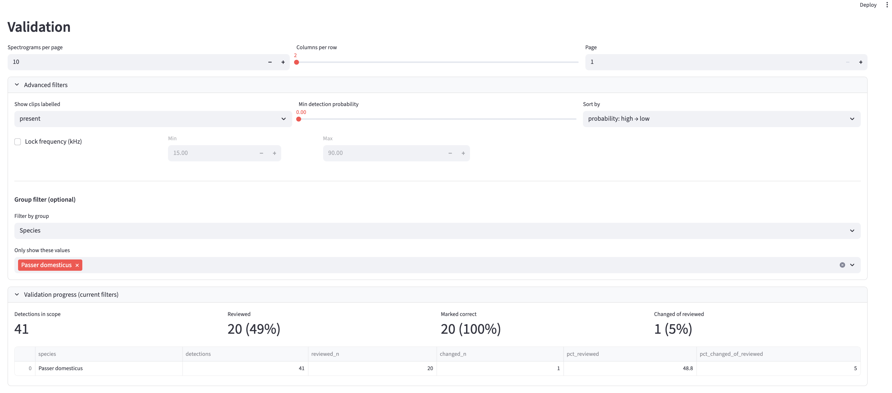
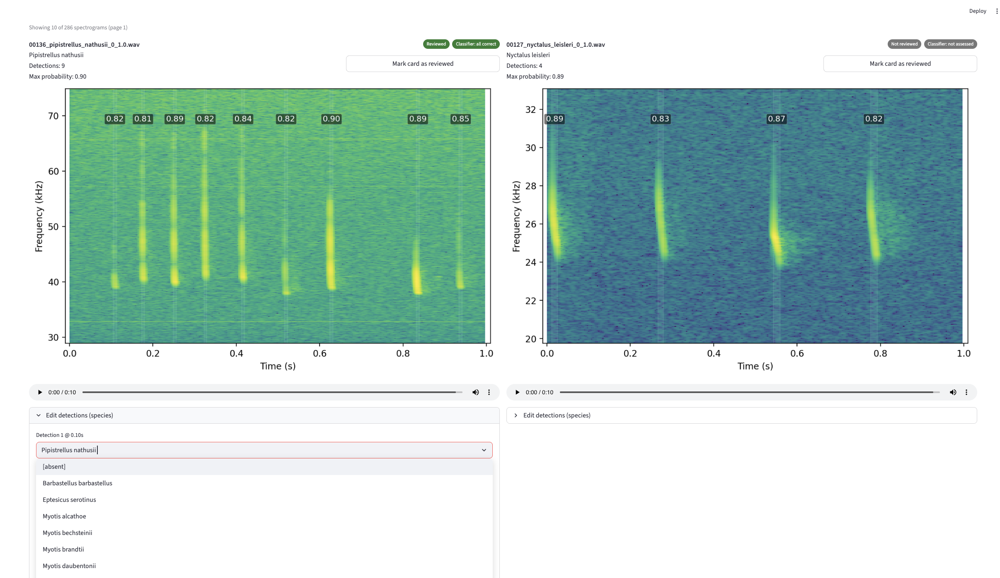

Macroecology
Forest communities, traits and ecosystem function under climate change.
Future forest communities
My doctoral research asks which existing North American forest communities are likely to remain suited to late-century climatic conditions, where no-analogue communities may emerge, and what those communities could consist of.
I combine large-scale forest inventory data with climate projections, species composition, functional traits and machine-learning models. The work predicts future species assemblages, assigns them to existing forest-community types and quantifies where projected communities fall outside present-day ecological space.
The analysis also examines feasibility: how far species may need to disperse and whether projected compositions would transgress existing seed zone guidance.
Trait–environment compatibility
This work tests whether the functional composition of existing forest communities remains compatible with future environmental conditions.
Using community-weighted means across physiological, tolerance and symbiotic traits, I model current trait–environment relationships and project how far future communities may move beyond combinations observed today.
The aim is to make future ecological communities biologically interpretable: not only where change may occur, but which ecological strategies and trait combinations those futures may require.
Traits and ecosystem services
I model how climate, forest structure and functional composition jointly shape ecosystem properties including carbon storage, species richness, habitat diversity, and timber production.
The research separates direct climatic exposure from effects mediated through community traits and forest structure, helping identify where changes in composition may amplify or offset broader environmental pressures.
It also evaluates where trait-based interventions may be ecologically feasible, using projected composition, dispersal constraints and seed-zone availability.
Bioacoustics
Acoustic signals as evidence of physiological, behavioural and ecological state.
Plant bioacoustics and drought detection
Drought damage can accumulate before it becomes visually obvious. In grapevine, hydraulic function may deteriorate while plants still appear vigorous, limiting the time available for targeted intervention.
This research tests whether ultrasonic acoustic emissions from the xylem can provide an earlier measure of realised physiological stress. These emissions are associated with cavitation and embolism formation, linking the acoustic signal directly to the hydraulic processes through which drought risk develops.
The experimental system combines continuous stem-mounted ultrasonic sensing with point dendrometers, soil-moisture measurements and controlled dry-down and rewatering episodes. For each acoustic event, the system records high-rate waveform snippets and features including timing, amplitude, duration, peak frequency, centre frequency and spectral composition.
The analysis has two connected aims: quantify whether acoustic changes precede established drought metrics, and train an automated classifier that predicts drought state across different vines and repeated stress–recovery episodes. The architecture is designed with eventual field deployment in mind, including local data collection and models suitable for edge processing.
PAMalytics
PAMalytics is an open-source, classifier-agnostic platform for ingesting, reviewing, validating and analysing passive acoustic monitoring detections.
Automated classifiers can process very large datasets, but their outputs still require structured validation. In practice, predictions are often separated from the underlying audio and reviewed through ad hoc workflows that make error rates, sampling decisions and subsequent analyses difficult to document.
PAMalytics reconnects detections to their source audio, provides spectrogram and playback tools, supports targeted and stratified review, records validation decisions and exports clean analytical datasets. It is designed for researchers and conservation practitioners who need a robust workflow without building bespoke software.


Forest elephant vocalisations
Forest elephants are difficult to observe directly, but their low-frequency vocalisations contain information about identity, age, sex and behavioural context.
I developed a scalable transfer-learning workflow that uses representations from large pre-trained audio models to classify demographic and behavioural attributes from relatively small labelled datasets.
The study compares multiple acoustic representations and classifiers, evaluates performance under limited data and demonstrates how general-purpose audio models can support biologically meaningful inference for rare and cryptic species.
The resulting paper was published in Remote Sensing in Ecology and Conservation.
Gibbon monitoring
In collaboration with Conservation International, I am developing workflows for reviewing classifier detections of pileated gibbons across large and uneven acoustic datasets.
The work focuses on targeted validation, sampling across sites and confidence ranges, and reducing the manual handling required to move from automated detections to reportable evidence.
This provides an applied test case for PAMalytics and for broader questions around how acoustic AI can be deployed reliably in conservation programmes.
View code → BBC documentary →Ecological monitoring
My computational work is grounded in practical field experience across acoustic and visual biodiversity surveys.
This includes bat transects and emergence surveys, butterfly monitoring, plant and tree identification, camera-trap review and annotation of bird, bat and elephant vocalisations.
Working with consultancies and conservation organisations provides direct experience of the operational constraints surrounding data collection, validation, reporting and decision-making.
Get in touch
Research collaborations and applied ecological projects.
For work spanning macroecology, bioacoustics, machine learning and ecological monitoring.